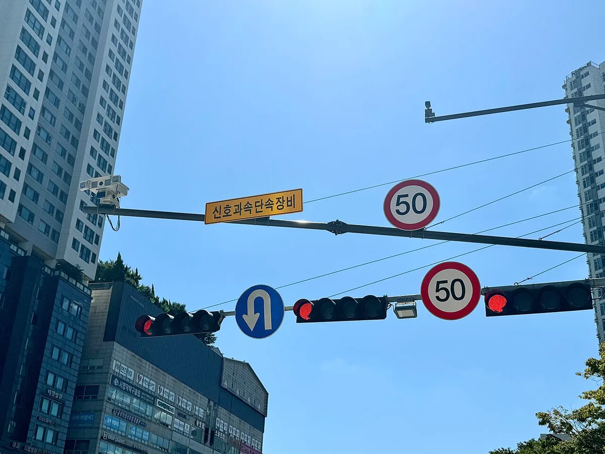
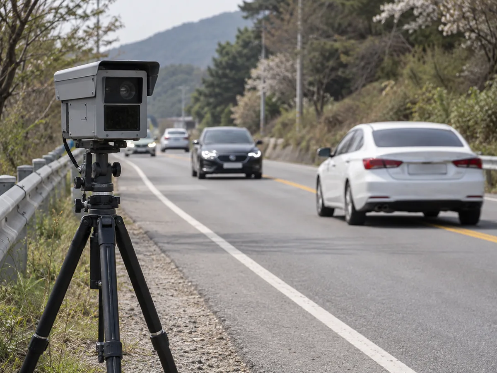
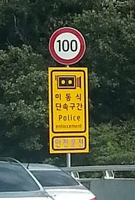
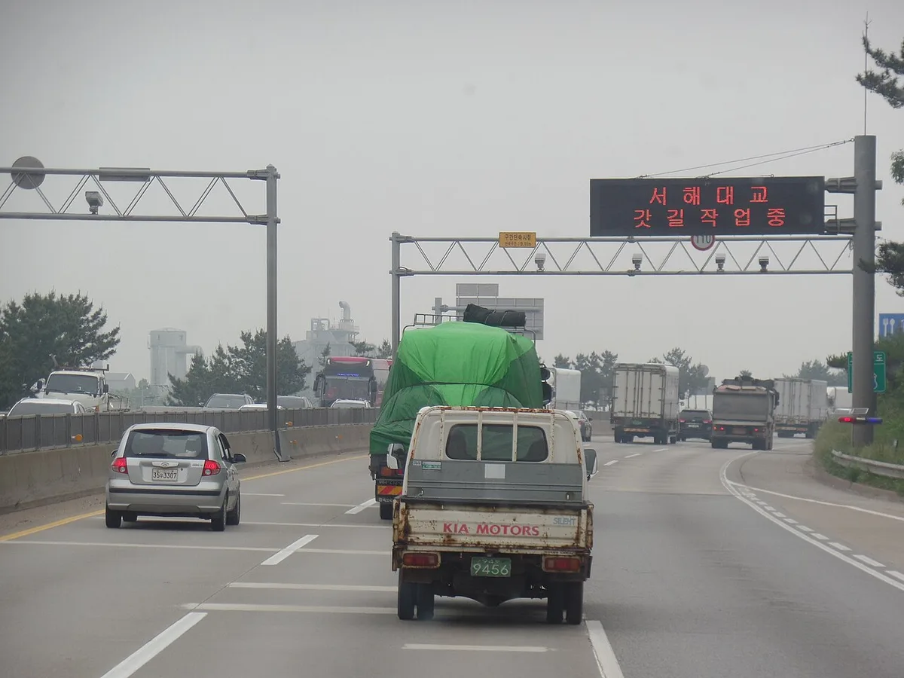
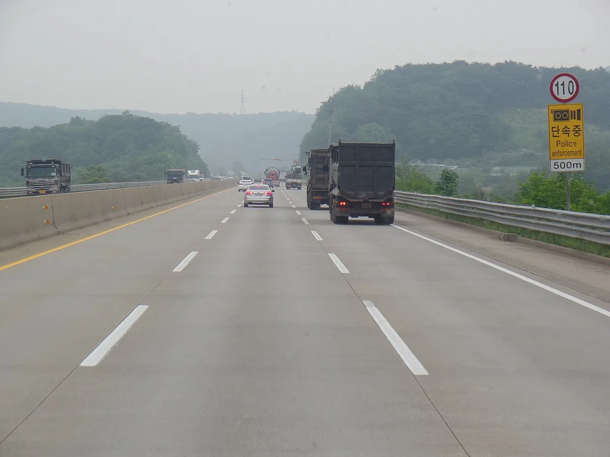
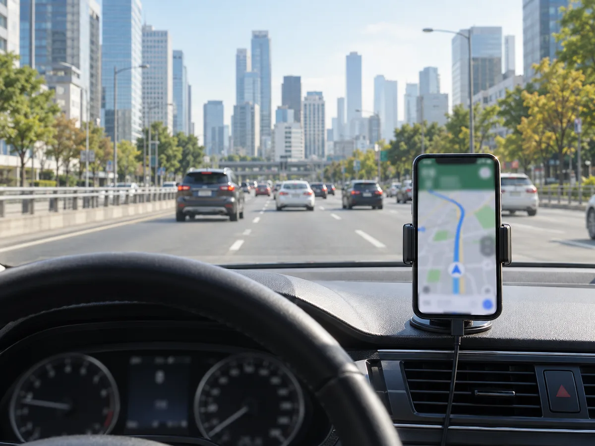
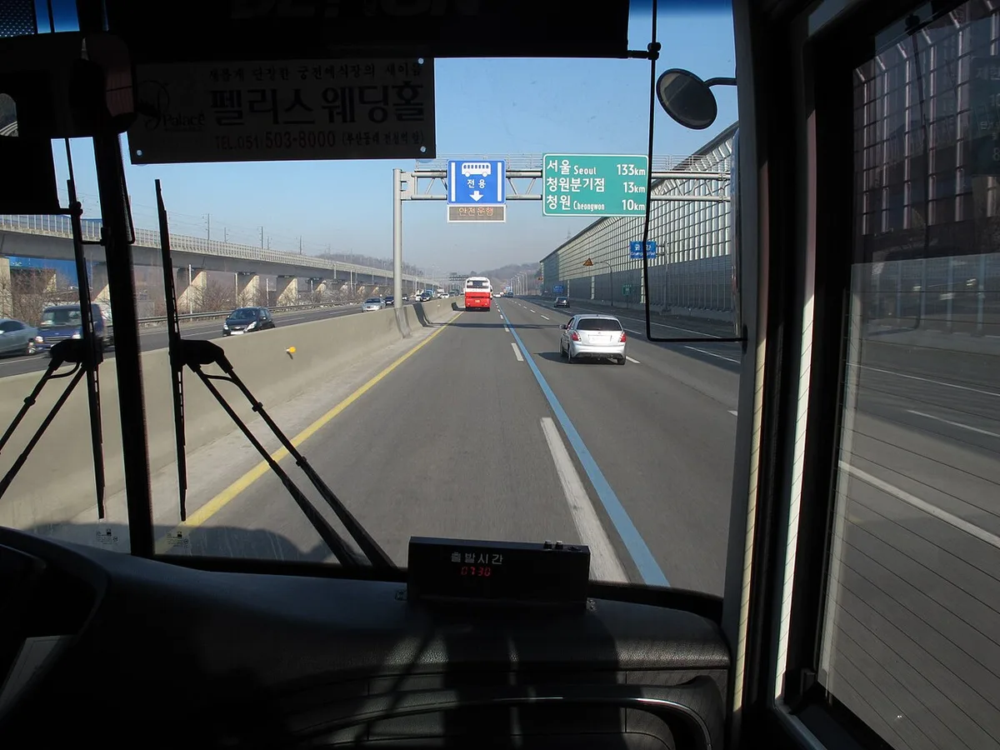
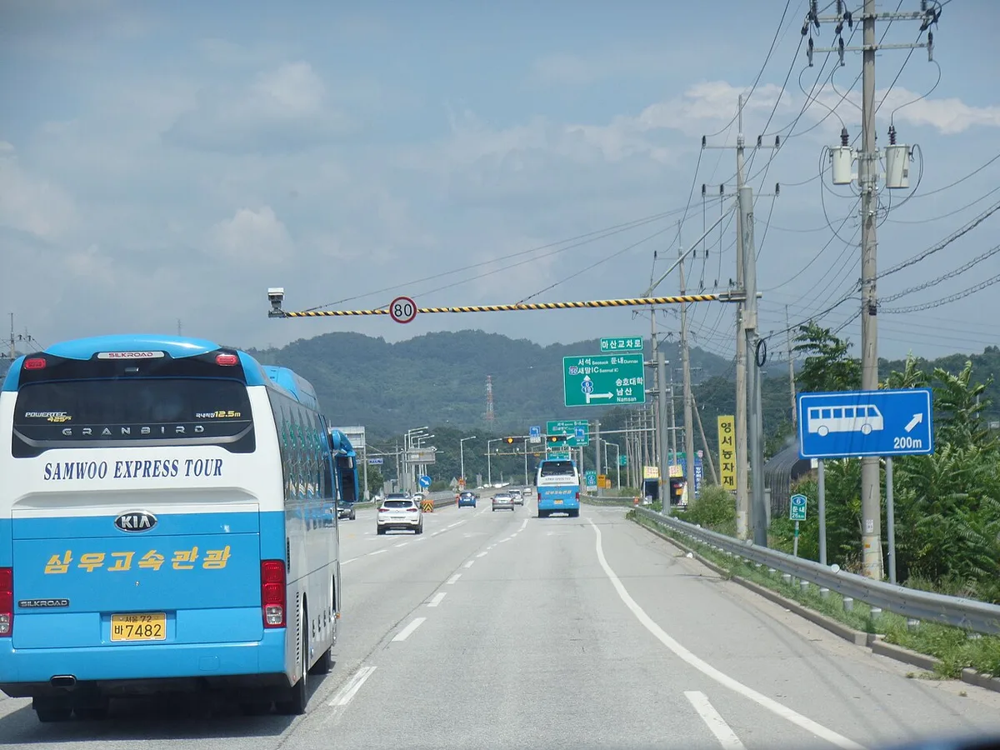

▲ 구간단속 구간은 시작·종료 지점에 안내 표지를 함께 세워 둔다 ⓒ Jhcbs1019, Wikimedia Commons (CC BY-SA 4.0)
"내비가 조용했는데 왜 찍혔지?" 과속·신호위반 고지서를 받은 운전자들이 자주 하는 말이다. 답은 대개 단속 장비의 종류에 있다. 도로 위 단속 장비는 한 종류가 아니다. 위치가 고정된 고정식, 장소와 시간을 바꿔 가며 운영하는 이동식(삼각대형·차량 탑재형), 구간의 평균 속도를 보는 구간단속이 각각 다른 방식으로 작동하고, 내비 앱이나 공공데이터로 확인할 수 있는 범위도 다르다. 이 글은 경찰청 관리 공공데이터, 도로교통법 체계, 언론이 인용한 경찰청 자료를 바탕으로 단속 장비의 종류와 확인 방법, 기준, 이의제기 창구를 정리했다.
1. 단속 카메라, 이렇게 나뉜다
▲ 구간단속 구간은 시작·종료 지점에 안내 표지를 함께 세워 둔다 ⓒ Jhcbs1019, Wikimedia Commons (CC BY-SA 4.0)
| 종류 | 어떻게 단속하나 | 운전자 입장 특징 |
|---|---|---|
| 고정식 과속 | 특정 지점에 설치된 장비가 통과 속도를 측정 | 예고 표지·내비 안내가 대체로 제공됨 |
| 구간단속 | 시점과 종점 통과 시각으로 평균 속도를 계산하고, 시점·종점 지점 속도도 함께 측정 | 카메라 앞에서만 감속해도 구간 평균이 높으면 적발될 수 있음 |
| 이동식(삼각대형) | 삼각대에 올린 장비를 경찰이 갓길 등에 설치해 운영 | 위치·시간이 바뀌어 내비로 사전 확인이 어려움 |
| 이동식(차량 탑재형) | 단속 장비를 차량에 싣고 이동하며 촬영 | 주행 중에도 단속 가능, 눈에 덜 띌 수 있음 |
| 신호위반 단속 | 교차로 신호 정보와 차량 진행을 연동해 정지선·신호 위반을 촬영 | 과속 겸용 장비도 있음(신호·과속 겸용 표지) |
| 버스전용차로 단속 | 전용차로 운행 시간대에 통행 가능 차량 여부를 촬영 | 운영 시간·차종 예외가 도로별로 다름 |
| 과적 단속 | 도로 관리 주체가 축하중·총중량을 측정 | 화물차 중심, 과속 카메라와 별개 체계 |
경찰청 자료를 인용한 언론 보도(2025년 12월 30일 차가치 보도)에 따르면 이동식 단속 카메라는 2019년 406대에서 2025년 534대로, 차량 탑재형은 2021년 20대에서 2025년 229대로 늘었다고 한다. 같은 보도는 경찰이 위치와 시간을 예고 없이 바꿔 이동식 단속을 운영한다고 전했다. 이 수치는 경찰청 자료를 인용한 복수 매체 보도에서 확인한 것이며 경찰청 원자료는 직접 확인하지 못했으므로, 정확한 현황은 경찰청에 확인이 필요하다.
2. 고정식·이동식·구간단속, 무엇이 다른가

▲ 도심 교차로에는 신호와 과속을 함께 단속하는 장비를 알리는 안내 표지가 붙는다 ⓒ Youngjin, Wikimedia Commons (CC BY-SA 4.0)
고정식은 도로교통법에 따라 설치·관리되는 무인교통단속장비로, 속도·신호·통행위반 등을 단속한다. 고정식은 표준데이터로 위치가 공개되는 반면 이동식은 그렇지 않다. 공공데이터포털 설명에 따르면 이 데이터는 경찰청이 관리하며 고정식만 포함한다.
이동식은 경찰서장 또는 고속도로순찰대장이 소속 경찰관을 관리자로 지정해 관리한다고 알려져 있다. 삼각대형은 갓길에 세워 두는 방식이라 표지나 장비가 보이기도 하지만, 차량 탑재형은 주행 방향과 위치가 계속 바뀐다. 이동식 단속에도 예고 표지를 두도록 경찰청 단속 처리지침에 규정돼 있다는 안내가 있으나, 실제 설치 여부와 방식은 현장별로 다를 수 있어 지침 원문 확인이 필요하다.

▲ 삼각대형 이동식 장비를 도로 갓길에 설치해 운영하는 방식을 표현한 개념 이미지(실제 장비 모습과 다를 수 있음) ⓒ CarPrism (AI 생성 이미지)

▲ 이동식 단속을 하는 구간임을 알리는 '이동식 단속구간' 안내 표지(원본 해상도가 낮은 사진) ⓒ Jytim, Wikimedia Commons (CC BY-SA 3.0)
구간단속은 구간 시작과 끝 지점 통과 시각으로 평균 속도를 산출한다. 알려진 운영 방식은 시점·종점 지점 속도와 구간 평균 속도를 함께 보되, 그중 가장 높게 초과한 값을 기준으로 처분한다는 것이다. 다만 세부 운영은 구간마다 다를 수 있다.
📍 구간단속에서 '카메라 앞에서만 감속'이 안 통하는 이유
평균 속도는 시간과 거리로 계산되므로 카메라 앞에서만 속도를 줄여도 구간 전체를 빠르게 달렸다면 평균이 제한속도를 넘을 수 있다. 국도·고속도로 구간단속 표지는 시작 지점과 종료 지점 양쪽에 세워진다.

▲ 고속도로 구간단속 구간의 시작 지점은 상단 구조물과 안내 표지로 알린다 ⓒ Jhcbs1019, Wikimedia Commons (CC BY-SA 4.0)
3. 단속 기준 — 허용 오차와 과태료·범칙금·벌점
과속은 제한속도 초과 속도에 따라 단계별로 처분이 달라진다. 무인단속 장비는 계기 오차 등을 감안해 통상 제한속도보다 일정 수준 높은 속도부터 기록하도록 설정되는 것으로 알려져 있다. 경찰청 교통단속 처리지침 제38조를 인용한 안내에서는 무인단속 장비의 기록 속도를 제한속도보다 10km/h 높은 속도로 조정하되, 구체적인 기록 속도는 시·도경찰청장이 도로 여건과 교통 환경을 고려해 정한다고 소개된다. 지침 원문(이미지 PDF)은 직접 열람하지 못했으므로 '초과'와 '이상' 중 어느 표현인지는 확인하지 못했다. 특정 장소의 실제 설정값은 공개되지 않을 수 있고, 구간단속의 허용 오차는 일부 정보성 글이 제한속도 구간별로 다르게(예: 100km/h 이상 22km/h, 70~99km/h 15km/h, 60km/h 이하 11km/h) 소개하지만 공식 자료로는 확인되지 않아 경찰청 확인이 필요하다.
| 제한속도 초과 | 과태료(무인단속·차량 소유주) | 범칙금(현장 적발·운전자) | 벌점(현장 적발) |
|---|---|---|---|
| 20km/h 이하 | 4만원 | 3만원 | 없음 |
| 20 초과~40 이하 | 7만원 | 6만원 | 15점 |
| 40 초과~60 이하 | 10만원 | 9만원 | 30점 |
| 60 초과 | 13만원 | 12만원 | 60점 |
벌점은 20~40km/h 초과 15점까지 정책브리핑 안내로 확인했고, 40~60km/h 30점·60km/h 초과 60점은 널리 안내되는 기준으로 시행규칙 원문은 직접 확인하지 못했다. 무인 카메라에 적발되면 운전자가 특정되지 않으므로 차량 소유주에게 과태료가 부과되고 벌점은 붙지 않는다. 반면 경찰관이 현장에서 직접 적발하면 운전자에게 범칙금과 벌점이 부과된다. 신호·지시 위반은 시행령 별표 기준으로 승용차 과태료 7만원(범칙금 6만원)이다(어린이보호구역은 13만원, 세부는 스쿨존 과태료 기사 참고). 정확한 최신 금액은 도로교통법 시행령 바로가기에서 확인 가능하다.
4. 어린이보호구역은 다르다

▲ 단속 500m 전에 제한속도와 단속 안내 표지를 세워 예고하는 구간도 있다 ⓒ Jhcbs1019, Wikimedia Commons (CC BY-SA 4.0)
어린이보호구역(스쿨존)은 기본 제한속도가 시속 30km이고, 위반 시 일반 도로보다 무거운 과태료가 적용된다. 카프리즘 기존 기사(후굿닷컴 등 참고) 기준으로 승용차 속도위반 과태료는 20km/h 이하 7만원, 20~40km/h 10만원, 40~60km/h 13만원, 60km/h 초과 16만원이며, 가중 시간대는 오전 8시부터 오후 8시까지다. 어린이보호구역 안에서 어린이 사고가 나면 민식이법에 따른 형사처벌까지 이어질 수 있다. 스쿨존 안전 규정 변화는 스쿨존 규제 변화 기사, 과태료 상세는 스쿨존 과태료 기사에서 다뤘다.
✅ 스쿨존에서 기억할 것
· 제한속도 30km/h 초과가 곧바로 과태료 대상이 될 수 있으므로 여유 속도를 기대하지 않기
· 스쿨존 안 신호위반·횡단보도 정지의무 위반도 무인단속 대상
· 지자체가 일부 이면도로 제한속도를 20km/h로 낮춘 곳도 있으므로 표지판 우선 확인
5. 단속 위치, 어디서 확인하나
가장 큰 오해는 "내비가 알려 주면 다 안전하다"는 생각이다. 위치 정보를 얻는 경로별 특징은 다음과 같다.
| 확인 경로 | 확인 가능한 것 | 한계 |
|---|---|---|
| 공공데이터포털 전국무인교통단속카메라표준데이터 | 경찰청 관리 고정식 카메라의 위치·단속 구분·제한속도·구간길이 등 항목 | 고정식만 포함, 이동식 제외. 반기 갱신이라 최신 설치와 시차 존재 |
| 지자체 교통정보(예: 서울시 TOPIS 단속카메라 정보) | 지자체가 제공하는 지도형 단속카메라 위치 | 지자체별 제공 범위·갱신 주기 상이 |
| 내비게이션·지도 앱 | 등록된 고정식·구간단속 위치, 접근 안내 | 앱 제작사 데이터 기준이라 최신 설치·이동식 미반영 가능, 공식 자료와 시차 |
| 도로 위 안내 표지 | 단속 예고 표지, 구간단속 시작·종료, 제한속도 | 표지가 없는 곳에서도 단속 가능한 유형이 있음 |
공공데이터포털의 표준데이터는 공공데이터포털 바로가기에서 확인 가능하고, 서울시는 TOPIS 단속카메라 정보 바로가기에서 지도로 확인 가능하다.

▲ 내비게이션 안내는 참고 자료일 뿐 이동식 단속 위치까지 모두 알려 주지는 못한다 ⓒ CarPrism (AI 생성 이미지)
📍 이동식은 위치를 사전에 알기 어렵다
이동식 단속 위치는 표준데이터에 포함되지 않고, 경찰이 위치와 시간을 바꿔 운영한다고 알려졌다. 결국 가장 안전한 방법은 카메라 위치를 피하는 것이 아니라 도로마다 제한속도를 지키는 것이다.
6. 버스전용차로·신호·과적·기타 단속

▲ 고속도로 버스전용차로 구간은 운영 시간과 통행 가능 차종이 정해져 있다 ⓒ Xxchangwoo0120xx, Wikimedia Commons (CC BY 3.0)
버스전용차로는 운영 시간대와 승합·승용 예외 조건이 도로별로 다르므로 표지와 노면 표시를 먼저 확인해야 한다. 신호위반은 정지선을 넘는 순간 단속되는 경우가 많다. 이 밖에 국도 구간에도 제한속도별 단속 장비가 설치돼 있다.
| 위반 행위 | 승용차 과태료 | 비고 |
|---|---|---|
| 신호·지시 위반 | 7만원 | 2025.6.2 개정 별표 8 범칙금 6만원 |
| 일반도로 전용차로(버스전용차로) 통행 위반 | 5만원 | 운영 시간·예외 차종은 도로별 안내 확인 |
| 고속도로 전용차로·갓길 통행, 중앙선 침범 | 9만원 | 같은 항목으로 묶여 규정 |
| 우회전·좌회전 방법 위반, 교차로 꼬리물기 | 5만원 | 법 제25조 위반 유형 |
| 보행자 횡단 방해(일시정지 위반) | 7만원 | 어린이보호구역은 별도 가중 |
| 끼어들기 위반 | 4만원 | - |
| 정차·주차 위반 | 4만원(같은 장소 2시간 이상 5만원) | 어린이보호구역 등은 가중 |
| 과적(축하중 10톤·총중량 40톤 초과 등) | 위반 정도에 따라 30만~300만원으로 안내됨 | 도로법에 따라 도로관리청이 단속, 고정검문소·톨게이트 계측장치와 이동식 축중기 이용 |

▲ 국도에도 제한속도 80km/h 등 도로별 제한속도 단속 장비가 설치된다 ⓒ Jhcbs1019, Wikimedia Commons (CC BY-SA 4.0)
경찰청은 2025년 하반기부터 AI 기반 무인단속장비를 본격 도입했고, 2025년 12월부터 2026년 2월 말까지 교차로 꼬리물기를 자동 단속하는 신형 장비를 시범 운영했다는 보도가 있다. 앞으로 단속 유형이 늘어날 수 있어, 카메라 유무보다 규정 자체를 지키는 습관이 중요하다.
7. 단속 통지를 받았다면 — 확인과 이의제기
단속 사실은 경찰청 이파인(이파인 바로가기)에서 조회할 수 있다. 다만 영상 판독과 확정에 시간이 걸려 단속 직후에는 조회되지 않을 수 있다. 통지는 사전통지서 또는 과태료 고지서로 오며, 2021년 정책브리핑 안내에는 고지서 발부 후 35일 이내 납부 시 20% 감경(20km/h 이하 4만원이 3만 2천원)이 소개돼 있다. 감경 기한은 통지서마다 다를 수 있으므로 고지서 안내가 우선이다. 질서위반행위규제법 제20조는 과태료 부과 통지를 받은 날부터 60일 이내에 서면으로 이의제기할 수 있고, 이의제기가 있으면 행정청의 부과처분은 효력을 잃고 법원 절차로 넘어간다고 정한다. 운전자를 알 수 있는 사정이 있다면 파출소에 면허증과 통지서를 내고 범칙금 처분으로 바꾸는 방법이 정책브리핑 기사에 소개돼 있으나, 벌점이 붙을 수 있어 신중히 판단해야 한다.
| 단계 | 내용 | 참고 |
|---|---|---|
| 1. 확인 | 이파인 조회, 고지서·사전통지서의 위반 일시·장소·사진 확인 | 본인 차량·운전 여부 확인 |
| 2. 사실관계 점검 | 운전자가 소유주와 다른지, 도난·대여 사정, 표지·장비 문제 여부 | 증빙(계약서, 블랙박스 등) 준비 |
| 3. 의견 제출/이의제기 | 과태료 부과 통지를 받은 날부터 60일 이내 서면 이의제기(질서위반행위규제법 제20조) | 기한 초과 시 다툴 기회가 줄어듦 |
| 4. 납부 또는 재판 | 이의제기 시 법원 절차로 넘어갈 수 있음 | 가산금·체납 불이익 유의 |
이의제기 절차와 사례는 과태료 이의신청 가이드에서 단계별로 정리했으므로 여기서는 반복하지 않는다. 확정 전에 감경·이의 가능 여부와 기한을 반드시 고지서로 확인하자.
8. 요약
단속 카메라는 고정식·이동식·구간단속으로 나뉘고, 신호·버스전용차로·과적 등 목적별 장비가 따로 있다. 고정식 위치는 공공데이터포털 표준데이터로 확인할 수 있지만 이동식은 제외돼 있어 내비만 믿을 수 없다.
승용차 과속 과태료는 4만~13만원, 어린이보호구역은 7만~16만원이며, 무인단속은 벌점 없이 소유주에게 과태료가 부과된다. 기록 속도 설정은 통상 제한속도 +10km/h로 알려졌지만 장소별로 다를 수 있다.
통지를 받으면 이파인·고지서로 사실관계를 확인하고 60일 이내 이의제기 여부를 판단하자. 금액과 기준은 개정될 수 있으므로 국가법령정보센터와 경찰청 안내로 최종 확인해야 한다.